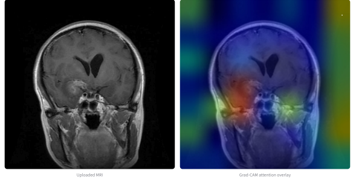
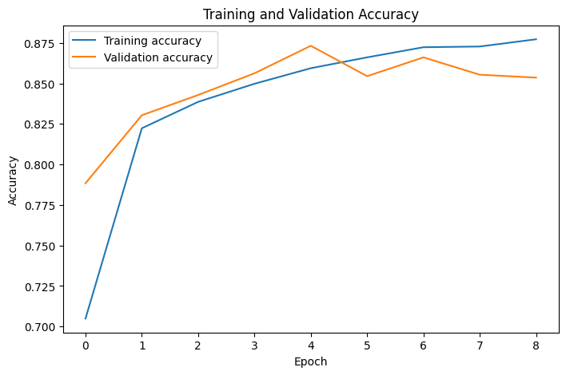
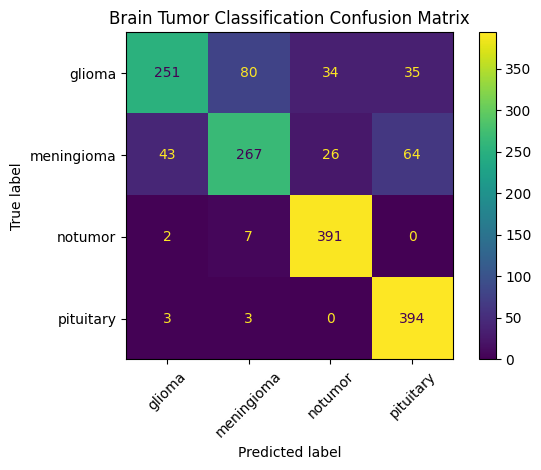

Project 03
AI Brain Tumor MRI Classifier
Built an explainable AI tool to categorize brain MRI scans and identify areas that affect the predictions, making model results easier to interpret.

The context
Making AI Decisions Easier to
Understand
MRI brain analysis can be a complicated procedure, and the predictions provided by deep learning algorithms are hard to understand without any visual assistance.
I developed an educational AI prototype which classifies MRI images as glioma, meningioma, pituitary tumour or no tumour. The goal was not only to create the prediction, but also to provide confidence scores and highlight the image regions that most influenced the model.
The process
From Model Training to
Meaningful Insight
I built the project in stages, moving from dataset preparation, training of the model, evaluation, interpretation, and development of an interactive interface.
I used transfer learning to avoid training a neural network entirely from scratch. After testing the initial model, I analyzed its mistakes using performance graphs, class specific metrics, and the confusion matrix.Then the Grad-CAM visualization was incorporated along with a Streamlit interface that would enable the user to upload an MRI and understand the results of the model more clearly.
Studied MRI classification workflows, transfer learning, model evaluation, and the limitations of explainable AI in medical imaging.
Prepared and organized 7,200 MRI images, trained an EfficientNetB0 classifier and developed a Streamlit application for image uploads and predictions.
Evaluated the model on 1,600 test images using accuracy, precision, F1 score, a confusion matrix, and incorrect prediction analysis.
Project gallery


